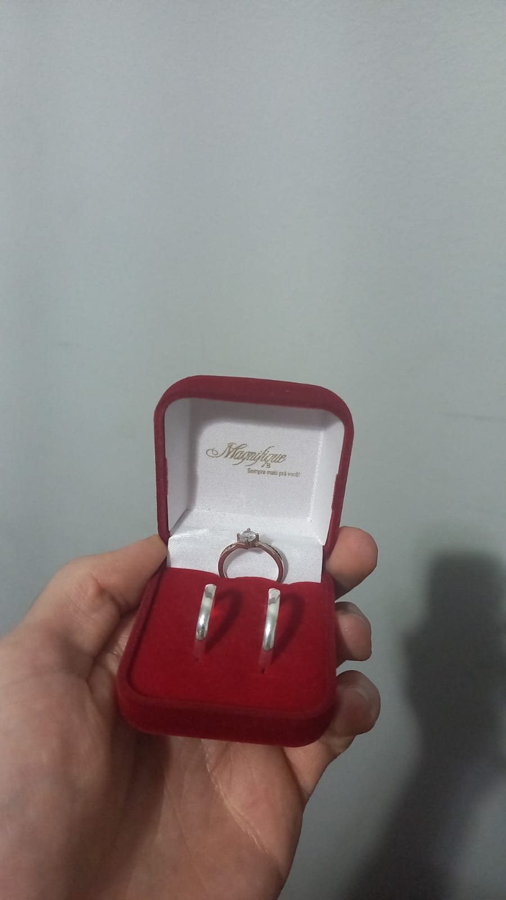

Amor, cada dia ao seu lado eu apenas tenho mais certeza que você é a pessoa certa,
cada momento com vc é especial, vc me deu a oportunidade de sentir o sentimento de amar de verdade, e nunca mais quero perder.
Amo seu jeitinho sua forma de demostrar amor, e sinto que simplesmente to me apegando em coisas bestas, que antes de namorar eu iria me achar um fresco.
Não imagino acordar sem seu bom dia, dormir sem seu boa noite, fazer uma ligação mesmo não tendo nenhum assunto para conversar. São as pequenas coisas que vc me ensinou a gostar.
Você sempre me fala que é apegada nos detalhes, e eu prometo que estou me esforçando para me apegar tambem, porque tudo que eu quero é te fazer feliz, independente se eu goste ou não.
Vou sempre me adaptar para tentar não te deixar chateada, mesmo as vezes eu não fazendo oq vc quer de propósito para vc n se acostumar a ser tudo do seu jeito, mas no final vc sempre vence,
pq eu prefiro te ver sorrindo doq com a cara de bunda(irritante).
Muito foda olhar para 4 meses atrás, nossas primeiras conversas, se for olhar agora é bem constrangedor, mas naquele momento vc me prendia no celular para falar com vc, nunca nem tinha te visto
e era impressionante como o papo batia, nosso primeiro encontro, eu te esperando no senai, indo até a praça, um beijo bem ruim e a gente rindo, como se nada tivesse acontecido, ficamos la até o beijo ficar bom,
aquilo não poderia ser normal,e acho que foi por isso que eu insisti tanto, e com certeza foi a melhor decisão que eu tomei, simplesmente vc é amor da minha vida, e com 4 meses conversando a gente sabe que um foi feito para o outro.
Eu acho que eu não consigo demonstrar o quanto eu te amo, e fiz essa pequena surpresa, com o meu pequeno conhecimento. Te amo muito.
Namora comigo? 💍
